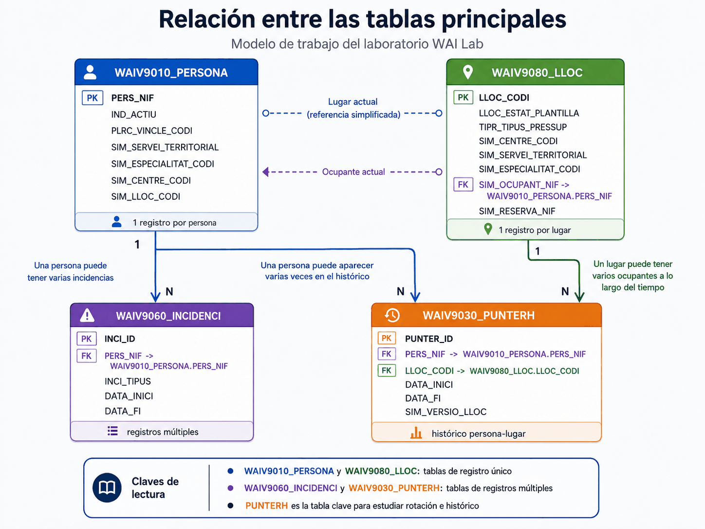
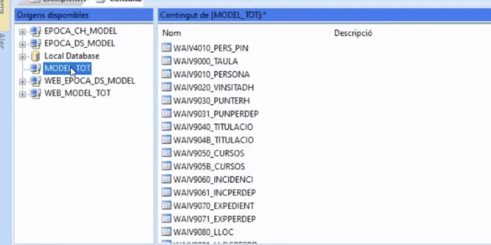
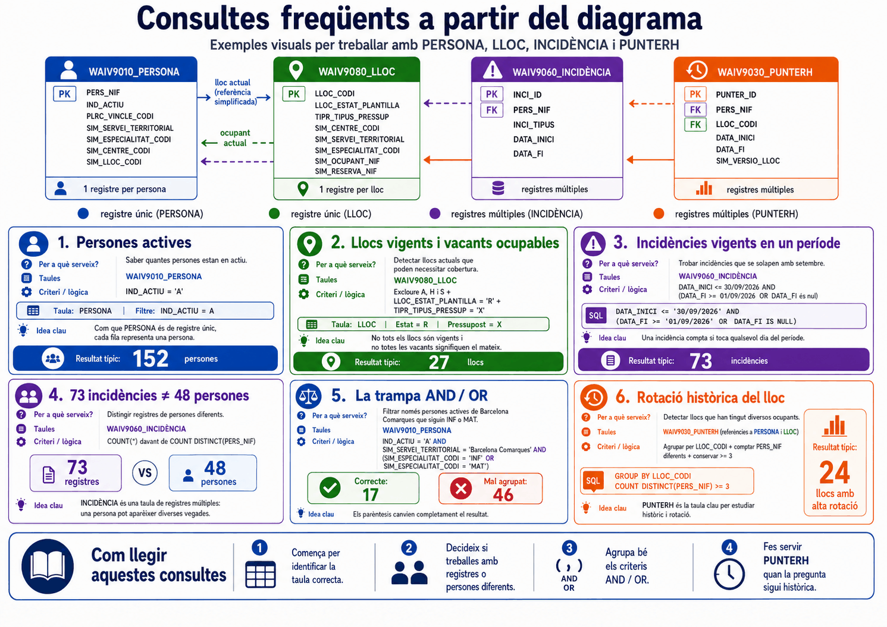

Apartat 1Per què comencem aquí
Gairebé tots els errors de Click & Decide tenen el mateix origen, i no és el programa. Són consultes tècnicament ben construïdes fetes sobre la taula equivocada o sobre una taula la forma de la qual l'usuari no havia entès.
Símptomes típics
"M'han sortit 73 incidències però resulta que són 48 persones."
"La consulta em torna la mateixa persona sis vegades."
"He filtrat llocs vacants i n'hi ha que no es poden ocupar."
Cap d'ells és un error del programa
Els tres surten de no haver respost, abans de començar, si la taula té una fila per clau o diverses, i a quin moment del temps es refereix.
Per això aquesta unitat va abans que cap botó. Quan la tingueu clara, les unitats 7 a 14 deixaran de ser catorze casos particulars i passaran a ser la mateixa idea aplicada quatre vegades.
Apartat 2El diagrama de les quatre taules
Aquest és el mapa complet. Val la pena obrir-lo a pantalla completa i tenir-lo a mà durant tot el curs: hi ha les quatre taules, les seves claus primàries, les claus foranes que les uneixen i, a sota de cada capsa, la informació decisiva: un registre per persona, un registre per lloc o registres múltiples.

És una versió simplificada pensada per aprendre i per
treballar-hi al simulador: manté els noms i el comportament de les taules
reals de la WAI, però redueix el nombre de camps i n'afegeix alguns amb
prefix SIM_ que no existeixen a la WAI real. L'estructura
-claus, cardinalitat i lògica de vigència- sí que és la de veritat, i és
l'única cosa que cal aprendre aquí.
Apartat 3Les tres preguntes
Davant de qualsevol taula de la WAI -les quatre d'aquest curs i les que no hi surten- hi ha tres preguntes que s'han de contestar abans de seleccionar cap camp. Són l'esquelet de tot el curs.
1. Quina és la clau?
Determina si una fila és una persona, un lloc... o una cosa més petita. Si t'equivoques aquí, tots els recomptes seran falsos.
2. A quina data es refereix?
Determina si estàs mirant una foto d'avui o una pel·lícula. Si t'equivoques aquí, buscaràs història en una taula que no en té.
3. Quin és el seu univers?
Determina quines files hi ha i quines no. Dues taules amb els mateixos camps poden contenir poblacions diferents.
Apartat 4Pregunta 1: quina és la clau
Una taula de registres únics conté una sola fila per a cada valor de la seva clau principal. Una taula de registres múltiples en pot contenir més d'una.
| Taula | Clau principal | Tipus | Una fila és... |
|---|---|---|---|
| WAIV9010_PERSONA | PERS_NIF | Registres únics | una persona |
| WAIV9080_LLOC | LLOC_CODI | Registres únics | un lloc de treball |
| WAIV9060_INCIDENCI | - | Registres múltiples | una incidència, no una persona |
| WAIV9030_PUNTERH | - | Registres múltiples | una ocupació, no una persona ni un lloc |
La conseqüència pràctica és brutal i és la font de l'error més freqüent de tot el curs. Si compteu files en una taula de registres múltiples, no esteu comptant persones:
Compto files
Sobre INCIDÈNCIA, un recompte de registres dóna:
Són 73 incidències. Una persona amb tres baixes hi apareix tres vegades.
Compto persones diferents
Amb un recompte de valors distints del NIF:
Aquest és el número que voldríeu si la pregunta era "quanta gent ha estat de baixa".
73 i 48 són tots dos correctes. Responen preguntes diferents. Saber quina de les dues esteu contestant és, literalment, la diferència entre un informe bo i un informe fals. A la unitat 10 veurem els tres comptadors que ho resolen i a la unitat 12 el cas complet.
Apartat 5Pregunta 2: a quina data
El segon eix classifica les taules segons la vigència de les dades que contenen.
Taules de dades actuals
Contenen la informació vigent al GIP. Són una fotografia: expliquen com són les coses ara, i no com eren l'any passat. PERSONA i LLOC són d'aquest tipus.
Taules de dades històriques
Contenen l'evolució del bloc de dades. Són una pel·lícula. Generalment inclouen també les dades vigents, perquè el present també forma part de la història. INCIDÈNCIA i PUNTERH ho són.
El procés de càrrega de les taules diàries es fa durant la nit. Per tant, qualsevol canvi que es faci al GIP un dia concret no apareixerà a Click & Decide fins l'endemà. Quan la documentació diu "dades a data d'avui", realment vol dir "dades vigents el dia anterior". Si esteu quadrant xifres amb algú que mira el GIP en directe, aquesta és la causa de la discrepància.
La freqüència de càrrega no és igual per a totes les taules:
| Taula | Càrrega | Conseqüència |
|---|---|---|
| PERSONA | Diària | Reflecteix el dia anterior. |
| LLOC | Diària | Reflecteix el dia anterior. No guarda com era el lloc en el passat. |
| INCIDÈNCIA | Diària | Vigents i finalitzades l'any actual i l'anterior. |
| PUNTERH | Setmanal | Una alta d'aquesta setmana pot no ser-hi encara. |
WAIV9040_TITULACIO | Setmanal | Un títol registrat dilluns pot no aparèixer fins la setmana següent. |
Apartat 6Pregunta 3: quin és l'univers
Aquesta és la més subtil de les tres, i explica per què la WAI té parelles de
taules bessones. WAIV9060 i
WAIV9061 tenen exactament els mateixos camps.
WAIV9030 i WAIV9031, també.
El que canvia és quines files hi ha a dins.
| Taula | L'univers és... | Feu-la servir per estudiar... |
|---|---|---|
| WAIV9060 | incidències iniciades en llocs del vostre àmbit | els llocs: què passa a la vostra plantilla |
| WAIV9061 | incidències de les persones que avui són al vostre àmbit | les persones: què els ha passat, fos on fos |
| WAIV9030 | tots els punters dels llocs del vostre àmbit | l'evolució històrica dels vostres llocs |
| WAIV9031 | tots els punters de les persones del vostre àmbit | la trajectòria de la vostra gent, encara que passés per altres departaments |
Les acabades en 0 segueixen el lloc. Les acabades en 1 segueixen la persona. Si l'estudi és "els meus llocs", feu servir 9060 i 9030. Si és "la meva gent", 9061 i 9031.
A sobre d'aquest univers hi actua encara un segon filtre, el del vostre perfil d'usuari, que ja vam veure a la unitat 2 i que s'aplica sol, sense que hàgiu de posar cap criteri.

MODEL_TOT. Val la
pena fixar-s'hi: van per parelles. Al costat de
WAIV9030_PUNTERH hi ha
WAIV9031_PUNPERDEP, al de
WAIV9060_INCIDENCI hi ha
WAIV9061_INCPERDEP, i el mateix amb els expedients i
els llocs. La segona de cada parella té els mateixos camps i
un univers diferent: la gent que ara és al vostre àmbit, en
comptes del que s'hi va originar.
Videotutorial 4 de l'EAPC, minut 1:31.
Aquesta guia treballa amb quatre d'aquestes taules i n'anomena unes quantes més. La resta existeixen i les podeu obrir: si un dia us cal una cosa que no surt a les quatre de sempre, la llista de Orígens disponibles és el primer lloc on mirar, i la descripció de cada taula és al manual que hi ha penjat al web (unitat 2).
Apartat 7Com es relacionen entre elles
Al diagrama de l'apartat 2 hi ha les fletxes que uneixen les taules. Val la pena llegir-les una per una, perquè cadascuna respon a una pregunta diferent.
-
De LLOC cap a PERSONA: qui l'ocupa ara
La taula de llocs porta el NIF de l'ocupant actual. És una relació d'ara mateix: serveix per saber si un lloc està ocupat o vacant, però no diu res de qui el va ocupar abans. Ho treballarem a les unitats 8 i 9.
-
De PERSONA cap a LLOC: on treballa ara
La taula de persones porta el codi del lloc que ocupa. És la mateixa relació vista des de l'altre costat. Els camps que la sostenen són els del punter, la relació persona-lloc.
-
De PERSONA cap a INCIDÈNCIA: una a moltes
Una persona pot tenir moltes incidències. Per això la fletxa va marcada amb 1 → N i per això la taula és de registres múltiples. Unitat 13.
-
De PERSONA i LLOC cap a PUNTERH: la història
PUNTERH és l'única taula que guarda el passat de la relació entre persones i llocs. Cada fila és un tram: aquesta persona va ocupar aquest lloc entre aquestes dues dates. És la taula clau per estudiar rotació i històric. Unitat 14.
PUNTERH no genera una fila per ocupació, sinó una fila per cada versió del lloc durant aquella ocupació. Si mentre una persona ocupa un lloc li canvien el nivell o la localitat, apareixerà una fila nova. Comptar files de PUNTERH i pensar que compteu ocupacions és un error clàssic; a la unitat 14 hi ha la solució.
Apartat 8Les sis consultes model
Aquest segon esquema és el pont entre la teoria i la pràctica. Conté sis consultes que cobreixen tot el que ensenya el curs, amb el criteri exacte i el resultat que heu d'obtenir. Són les mateixes que podreu reproduir al simulador: si el vostre número no coincideix, la consulta té un error i sabreu que l'heu de revisar.

Aquestes són, i cadascuna té la seva unitat al curs:
1. Persones actives
- Per a què serveix
- Saber quantes persones estan en actiu.
- Taula
- WAIV9010_PERSONA
- Criteri
- IND_ACTIU = 'A'
- Idea clau
- Com que PERSONA és de registre únic, cada fila és una persona: comptar files aquí sí que compta gent.
- On s'explica
- Unitat 7
152 persones resultat de control
2. Llocs vigents i vacants ocupables
- Per a què serveix
- Detectar llocs actuals que poden necessitar cobertura.
- Taula
- WAIV9080_LLOC
- Criteri
- LLOC_ESTAT_PLANTILLA = 'R' AND TIPR_TIPUS_PRESSUP = 'X'
- Idea clau
- No tots els llocs són vigents i no totes les vacants signifiquen el mateix: n'hi ha de pressupostades que no es poden ocupar.
- On s'explica
- Unitats 8 i 9
27 llocs resultat de control
3. Incidències vigents en un període
- Per a què serveix
- Trobar incidències que se solapen amb un mes concret.
- Taula
- WAIV9060_INCIDENCI
- Criteri
- DATA_INICI <= 30/09 AND (DATA_FI >= 01/09 OR DATA_FI és nul)
- Idea clau
- Una incidència compta si toca qualsevol dia del període, encara que comencés abans o acabi després.
- On s'explica
- Unitat 13
73 incidències resultat de control
4. 73 incidències no són 48 persones
- Per a què serveix
- Distingir registres de persones diferents.
- Taula
- WAIV9060_INCIDENCI
- Criteri
- compte de registres → 73 compte distint de PERS_NIF → 48
- Idea clau
- INCIDÈNCIA és de registres múltiples: una persona hi pot aparèixer diverses vegades.
- On s'explica
- Unitats 10 i 12
73 registres enfront de 48 persones
5. La trampa AND / OR
- Per a què serveix
- Filtrar només persones actives d'un àmbit amb una de dues especialitats.
- Taula
- WAIV9010_PERSONA
- Criteri
- IND_ACTIU = 'A' AND SIM_SERVEI_TERRITORIAL = 'Barcelona Comarques' AND (ESPEC = 'INF' OR ESPEC = 'MAT')
- Idea clau
- Els parèntesis canvien completament el resultat: 17 ben agrupat, 46 mal agrupat.
- On s'explica
- Unitat 7
17 correcte 46 si s'agrupa malament
6. Rotació històrica del lloc
- Per a què serveix
- Detectar llocs que han tingut diversos ocupants.
- Taula
- WAIV9030_PUNTERH
- Criteri
- agrupar per LLOC_CODI comptar PERS_NIF diferents >= 3
- Idea clau
- PUNTERH és l'única taula que permet estudiar història i rotació.
- On s'explica
- Unitat 14
24 llocs amb alta rotació
Apartat 9Com triar la taula correcta
Aquest és el resum operatiu de tota la unitat. Davant d'un encàrrec, llegiu-lo de dalt a baix i pareu a la primera línia que encaixi.
| Si la pregunta és sobre... | Taula | Perquè |
|---|---|---|
| persones, avui | PERSONA | una fila per NIF, dades del dia anterior |
| llocs de treball, avui | LLOC | una fila per codi de lloc, sense història |
| baixes, permisos o reduccions | INCIDÈNCIA | una fila per incidència, amb dates d'inici i fi |
| què va passar abans, o rotació | PUNTERH | l'única amb l'històric persona-lloc |
| titulacions, cursos, currículum | WAIV9040, WAIV9190, WAIV9090 |
registres múltiples: un NIF hi surt tantes vegades com títols té |
Abans de tocar el ratolí, digueu en veu alta: "aquesta taula té una fila per..., es refereix a aquesta data, i conté aquest univers". Si no sabeu completar les tres frases, obriu primer el PDF de la taula a la intranet. Costa dos minuts i estalvia informes equivocats.
Apartat 10Exercicis
Aquests tres es resolen amb paper i llapis: no cal ni el programa ni el simulador. Si els encerteu, la resta del curs us costarà la meitat. Proveu de contestar abans d'obrir la solució.
Tria la taula
ConceptualPer a cada encàrrec, digueu quina de les quatre taules faríeu servir:
- Quantes persones hi ha en actiu avui al meu departament.
- Quins llocs de la meva unitat estan vacants.
- Quanta gent va estar de baixa el setembre passat.
- Quants ocupants diferents ha tingut el lloc 12345 des del 2020.
- Quins llocs han canviat de nivell mentre estaven ocupats.
Solució
- PERSONA - pregunta sobre persones, avui.
- LLOC - pregunta sobre llocs, avui.
- INCIDÈNCIA - baixes amb dates d'inici i fi.
- PUNTERH - història i rotació.
- PUNTERH - és l'única que guarda les versions del lloc. LLOC us diria com és ara, no com era.
Quin número donaries
ConceptualLa vostra cap us demana: "quanta gent ha estat de baixa aquest setembre?". Feu la consulta sobre INCIDÈNCIA i la graella diu 73 registres. Un recompte de NIF distints en dóna 48.
Quin número li doneu, i què li heu d'explicar?
Solució
48. Ha preguntat per gent, i INCIDÈNCIA és de registres múltiples: qui ha tingut dues baixes hi surt dues vegades.
Ara bé, els 73 també serveixen i val la pena dir-los-hi: són el nombre de processos, útil per mesurar càrrega de gestió. La resposta professional és "48 persones en 73 incidències".
9060 o 9061
ConceptualDos encàrrecs. Quina taula per a cadascun i per què?
- Volem saber quins llocs del nostre departament han tingut més absentisme aquest any, per reforçar-los.
- Recursos Humans vol el historial d'incidències de les persones que avui treballen a la nostra unitat, per a un estudi de salut laboral.
Solució
1: WAIV9060. L'estudi és sobre els llocs. Volem les incidències iniciades als nostres llocs, encara que la persona després hagi marxat a un altre departament.
2: WAIV9061. L'estudi és sobre les persones. Volem tot el seu historial, inclòs el que van generar mentre treballaven en un altre lloc.
Si us les heu intercanviat, rellegiu la regla: les acabades en 0 segueixen el lloc, les acabades en 1 segueixen la persona.
Els exercicis amb codi EX- tenen el mateix identificador al
simulador, on es poden executar sobre dades reals i comprovar el resultat.
El simulador funciona pel seu compte: no cal seguir aquest curs per
fer-lo servir, ni cal el simulador per entendre aquesta unitat.
Apartat 11Llista de comprovació
- Anomenar les quatre taules principals i el color amb què les identifiquem.
- Dir la clau principal de PERSONA i de LLOC.
- Explicar per què INCIDÈNCIA i PUNTERH no tenen una clau simple.
- Explicar per què 73 incidències poden ser 48 persones.
- Distingir taula de dades actuals i taula de dades històriques.
- Justificar per què "a data d'avui" vol dir realment ahir.
- Triar entre 9060 i 9061, i entre 9030 i 9031, davant d'un encàrrec.
- Dir quina és l'única taula que serveix per estudiar rotació.
- Reproduir de memòria la taula "de la pregunta a la taula".
Amb el model al cap, ja podem obrir el programa. La unitat 1 és la més senzilla de tot el curs: localitzar Builder i crear el projecte on desarem la feina.